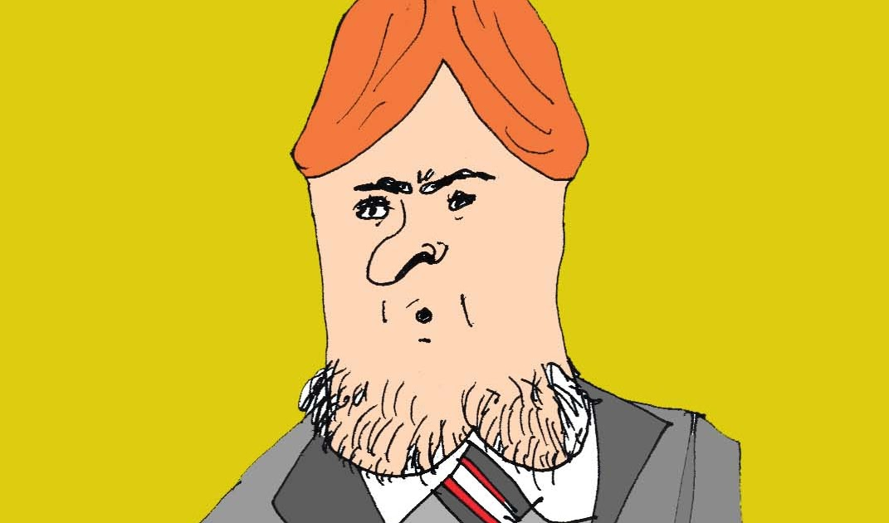
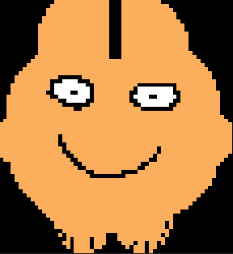

Mas sobre el juego y el creador:

Tema mencionado
Si quieres escuchar el tema Cabeza De Poronga que se utilizo para crear este juego, haga clic en el titulo

Trailer Del Juego
En este video pordas observar mejor como es este juego